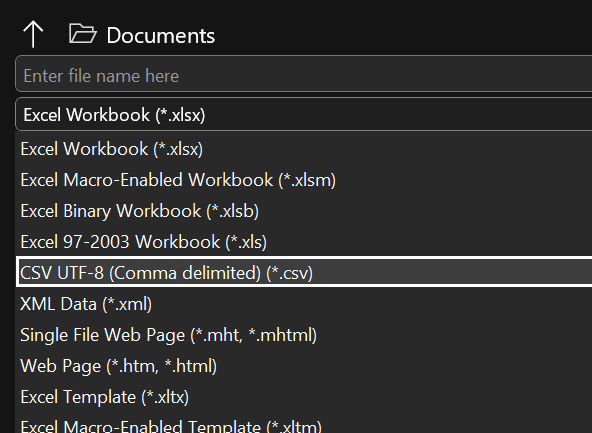

En todas las empresas se usan hojas de cálculo para todo lo relacionado con datos. El estándar suele ser Excel, pero seguro que te has encontrado con ficheros que no se comportan como Excel:
- El icono en la carpeta es diferente.
- Si tiene muchas filas, Excel te las corta y te muestra “solo” 1 millón.
- Si haces tablas dinámicas, gráficos o creas varias pestañas, lo pierdes todo.
- Te escribe varias columnas de tus tablas en una sola columna de Excel (la A).
Si te pasa cualquiera de esas cosas, es muy posible que estés tratando un fichero CSV como fichero Excel, y eso puede tener consecuencias.
Aquí te cuento qué cosas puedes hacer y qué cosas no.
Índice
- Qué es un fichero CSV
- Cómo abrir CSV en Excel
- Cómo convertir CSV a Excel
- Cuándo no deberías convertir CSV a Excel
- Cómo abrir un CSV en R
- Cómo abrir un CSV con Python
- Cómo crear un fichero CSV
- Conclusiones
Qué es un fichero CSV
Me gustaría que vieras la idea del fichero CSV como un formato. Es una forma estándar de guardar datos tabulares en un fichero. En un fichero de texto, casi casi como si estuvieras almacenando datos en un Word (aunque nunca lo abrirías con Word, pero sí con un Bloc de Notas).
Es un formato para guardar tablas de datos en texto. Las columnas irán separadas por un signo (una coma en principio) y cada fila terminará cuando pulses la tecla Intro.
Así quedaría:
columna_1,columna_2,columna_3
1,"Juan",45
2,"María",27
3,"Miguel",68
4,"Luisa",53
Ahí tienes una tabla. Tiene 3 columnas y 4 filas y está en formato CSV. Las columnas (la primera es un ID, las segunda es un nombre y la tercera es una métrica que puede ser la edad) están separadas por coma (fíjate en que no hay espacios).
Si eso lo guardas en un fichero, podrías decir que el fichero tiene formato CSV.
Importante. Da igual la extensión del fichero en este caso. La extensión te puede resultar útil para que el ordenador sepa con qué fichero abrirlo, pero si tú indicas manualmente que lo quieres abrir con Excel, y le das a Excel esas indicaciones (es un fichero de texto con valores separados por coma), dará igual si el fichero tiene extensión CSV o no.
Otra cosa: a Windows le gusta ocultar la extensión pero no es obligatorio. De hecho, te recomiendo que configures tu Windows para mostrar la extensión si trabajas con programación, porque te facilitará el tener claras las rutas a tus ficheros. Para ello, desde cualquier carpeta, haz click en la pestaña View (en español será Vista) y luego marca la opción File name extensions (no sé cómo lo han traducido, pero será parecido).
CSV signfica valores separados por coma por sus siglas en inglés. Pero verás muchos ficheros CSV con valores separados por punto y coma (;). Esto ocurre especialmente en entornos hispanoparlantes , o francoparlantes, por ejemplo, en los que los decimales de los números se indican con comas. En estos casos, no sabríamos cuándo una coma hace referencia al decimal y cuándo a la columna. Así que se cambia el delimitador de columna (esto no pasa en inglés porque los anglosajones separan los decimales con punto).
Aprovecho para recordar que los números en un ordenador, cuando los quieres usar para operaciones, no les separas los miles (eso es solo para escribir texto), así que no necesitas preocuparte por esos caracteres.
Cómo abrir CSV en Excel
A ver, Excel es uno de los recursos más habituales para trabjar un fichero CSV. De hecho, Windows usa Excel como aplicación determinada para abrir un fichero con extensión CSV (si no tiene extensión, no tendrá aplicación determinada).
Ahora bien, puede ser mala idea usar Excel por lo que te he dicho más arriba (todo concentrado en una columna, demasiadas filas, no guardas tablas dinámicas ni gráficos…).
Si de todos modos Excel es tu única opción, y el fichero no supera el máximo de filas o columnas, puedes abrirlo y hacer operaciones.
Luego puedes:
- guardar el fichero con los cambios, conservando su formato CSV (perderás las fórmulas pero se guardarán los valores nuevos que hayas calculado).
- guardar el fichero como Excel, en
Save AsoGuardar como.
Cómo convertir CSV a Excel
Si abres el fichero con Excel y lo ves bien, podrás convertir el CSV a Excel haciendo click en Archivo y Guardar como. Ahí elige la opción Excel.

Si el archivo se puede abrir pero lo ves en una misma columna, se debe a que tu Excel está configurado para esperar que las columnas estén separadas por un signo (como una coma, por ejemplo) pero están separadas por otro (como un punto y coma). Eso es lo que pasa en el caso de esta imagen:

Tienes dos opciones en un caso así:
- Puedes usar la herramienta
Texto en columnas, indicando cuál es el separador (en el caso de la imagen, puedes ver que las columnas las deberían separar los puntos y coma). - Puedes cambiar tu configuración de Excel. Esto lo haces desde
Archivo, luegoOpciones. En la ventana que se te abra, eligesAvanzadas. La opción que tienes que cambiar es la de la imagen:

Cuándo no deberías convertir CSV a Excel
Si tu CSV tiene demasiadas filas o columnas, y lo conviertes a Excel, perderás información.
En un caso así, no puedes abrir tu CSV como si fuera un Excel, usando la opción por defecto que te da Windows.
Si lo que quieres es hacer algunas operaciones con tablas dinámicas, y Excel es tu única opción porque no sabes programar, puedes crear una conexión al fichero, sin llegar a cargarlo. Para ello, en la pestaña Data de Excel, elige la opción From Text/CSV a la izquierda de la pantalla.
Luego sale una ventana mostrándote una muestra del fichero CSV. Debajo del todo, eliges Load to y verás la siguiente ventana. Elige las opciones que te muestro (sirven para no cargar el fichero en Excel, que ya sabes que no cabe, sino para solamente conectarte a él):

Ahora podrás crear una tabla dinámica sobre el fichero CSV, usando como fuente de la tabla dinámica la conexión que acabas de crear.
Cómo abrir un CSV en R
Algunos lenguajes de programación son la forma genérica de trabajar con ficheros CSV sin convertirlos, de forma que conserves toda la información.
En R, convertirás el CSV en un data frame. Un data.frame es la forma básica de trabajar con tablas en R.
Para empezar, deberás saber la ruta al fichero CSV que quieres tratar como data frame. La forma directa es usar la función read.csv().
datos <- read.csv("~/Document/fichero.csv")
Ahora podrías realizar tus exploraciones con toda la información del CSV. Si esto te interesa y no saber por dónde empezar, te recomiendo que:
- Sigas mi newsletter. Al suscriberte te mando mi Piedra Roseta y tendrás algunas pistas de cómo empezar.
- Estudies una introducción a tidyverse, una colección de herramientas para tratar tablas de datos con R. Concretamente, empieza por dplyr.
Cómo convertir CSV a Excel con R
Si tienes un fichero CSV que has trabajar con R, y luego quieres llevar el resultado de tus análisis a Excel, puedes hacerlo también con poco código.
Tendrás que instalarte una librería pero te recomiendo writexl, que para convertir a Excel tablas sencillas, sin formato, no da problemas.
Tu código sería así:
# Esto primero lo ejecutarás una sola vez, para instalar la librería
# install.packags("writexl")
library(writexl)
write_excel(datos, "~/Documentos/resultados.xlsx")
Fíjate en que tienes que especificar al extensión.
Cómo abrir un CSV con Python
Python es un lenguaje más usado que R y quizá por necesidades de mercado necesites trabajar con Python. Entonces te recomiendo que pruebes con pandas.
El código de pandas para leer un CSV y cargarlo en R tiene detalles diferentes, pero la filosofía es muy parecida.
import pandas as pd
datos = pd.read_excel('~/Documents/fichero.csv')
Cómo convertir un CSV a Excel con Python
Si hubieras trabajado tu DataFrame con pandas y ahora quisieras convertirlo a Excel, puedes usar pandas de nuevo:
datos.to_excel('~/Documents/resultados.xlsx')
Cómo crear un fichero CSV
En el trabajo te tocará crear ficheros CSV. Puede ocurrir porque:
- Sea el protocolo porque ocupan menos que un fichero Excel.
- Porque son más cómodos para programación, así que algún desarrollador te pedirá datos en este formato.
- O porque trabajes con herramientas que necesitan este formato, y no Excel.
Ya sabes convertir CSV a Excel, pero necesitas saber convertir de Excel a CSV o crear ficheros CSV desde cero.
Si tienes un Excel, convertirlo a CSV consiste en Guardar como CSV. Ya está.
Si tienes que crearlo desde cero, te explico cómo hacerlo con Excel, R y Python.
Cómo crear un fichero CSV con Excel
Para crear un fichero CSV con Excel, trabajas con normalidad y tienes que acordarte de guardar al final como CSV, y no dejarlo en el formato que Excel tiene por defecto.
Para ello, asegúrate de que:
- no tienes varias pestañas (se guardará solo la que tengas visible en el momento de guardar).
- no tienes gráficos.
- no tienes formatos en las celdas .
- no tienes tablas dinámicas.
Si tienes alguna cosa de esas, cuando guardes a CSV Excel te dará un aviso. Si procedes, lo perderás todo.
Cómo crear un fichero CSV con R
Si en R has creado un data frame (o has obtenido uno nuevo como resultado de una operación) y ahora quieres guardarlo en CSV, tienes varias opciones. La más directa es usar la función write.csv(), que está siempre disponible.
No obstante, es lenta y crea una columna auxiliar poco intuitiva. Te recomiendo mejor la librería readr:
library(readr)
write_csv(resultados, "~/Documents/resultados.csv")
Cómo crear un fichero CSV con Python
Puedes hacer la operación análoga con Python. De nuevo, te recomiendo que uses pandas porque es lo más extendido, aunque hay otras opciones.
resultados.to_csv('~/Documents/resultados.csv')
Conclusiones
Mira, esto es solo una introducción por si estabas muy perdido. En el día a día, te encontrarás con pequeños detalles y lo que te he contado aquí no será suficiente.
La experiencia te dará nuevas herramientas para esas situaciones, pero los conceptos sí los tienes todos aquí.
En mi newsletter hablo de estas cosas todas las semanas. Las personas que están suscritas reciben muchas ideas, trucos y me preguntan dudas. A veces, respondo.
¿Cómo convertir un Archivo CSV en una tabla de Excel?
La forma más directa es abrir el archivo con Excel, cosa que hace Windows por defecto. También puedes importar los datos de CSV a Excel desde la pestaña Datos, y la opción importar desde texto.
¿Cómo poner un CSV en Excel?
La forma más directa es abrir el archivo con Excel, cosa que hace Windows por defecto. También puedes importar los datos de CSV a Excel desde la pestaña Datos, y la opción importar desde texto.
¿Cómo pasar CSV a columnas?
Si has abierto un CSV con Excel y están todos los datos en la misma columna, puedes pasar todo a distintas columnas con la opción Texto a Columnas en la pestaña Datos, o puedes cambiar tu configuración de Excel en Archivos, Opciones en la pestaña Avanzadas.
¿Cómo abrir un CSV en Excel sin perder formato?
Un CSV no debería tener formato, más allá del dado por filas y columnas. Si la distribución de columnas no está bien, deberías elegir la opción de pasar texto a columnas.